화면을 녹화하여 만든 움직이는 이미지로 문서의 가독성을 개선
1. 왜 ScreenToGif?
오픈소스: 광고, 워터마크, 분량제한 없이 사용 가능
다양한 기능 및 설정: 녹화 범위 지정, 마우스 위치 강조, 클릭 효과, 고정창 마우스 따라다니기 기능, gif, avi 등 다양한 출력 방식 제공 등
비교 대상 확인
-
CamStudio
오픈소스. 마우스 위치 강조나 클릭 효과 있음.
출력 양식 부족, 부가 기능 부족
소개 사이트에서의 인터페이스는 처참하지만..
실제 윈도우10 환경에서 사용해보면 봐줄만 하다. 윈도우 기본 인터페이스를 사용해서 그런듯.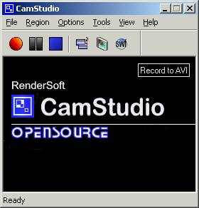웹 검색 이미지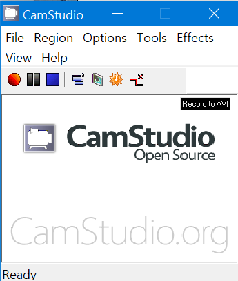설치 후 실행 화면 (Windows10) -
ShareX
https://getsharex.com/
오픈소스. 추천 사이트에서 핫함, 자체 서비스에 쉽게 업로드하는것에 집중된 느낌?
영역 설정 기능이 없다.
녹화 관련 설정은 이게 전부.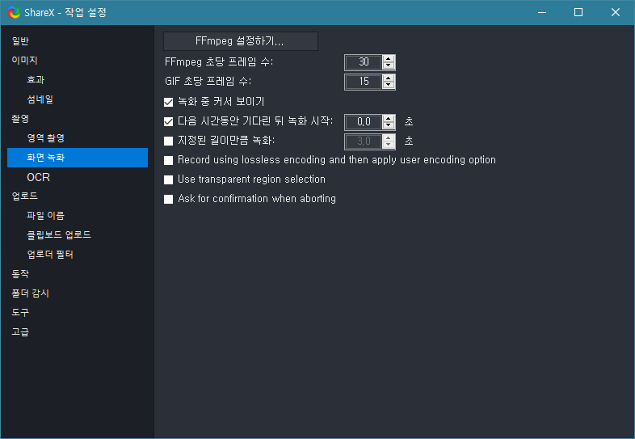ShareX 화면 녹화 설정 항목화면 영상 녹화보다는 이미지 캡처 및 편집에 집중한 느낌, 하지만 이미지 캡처 관련해서는 다양한 양식을 지원하고 문서도 훌륭하게 구성되어 있다.
-
Free Cam
https://www.freescreenrecording.com
무료 인듯 하면서 유료.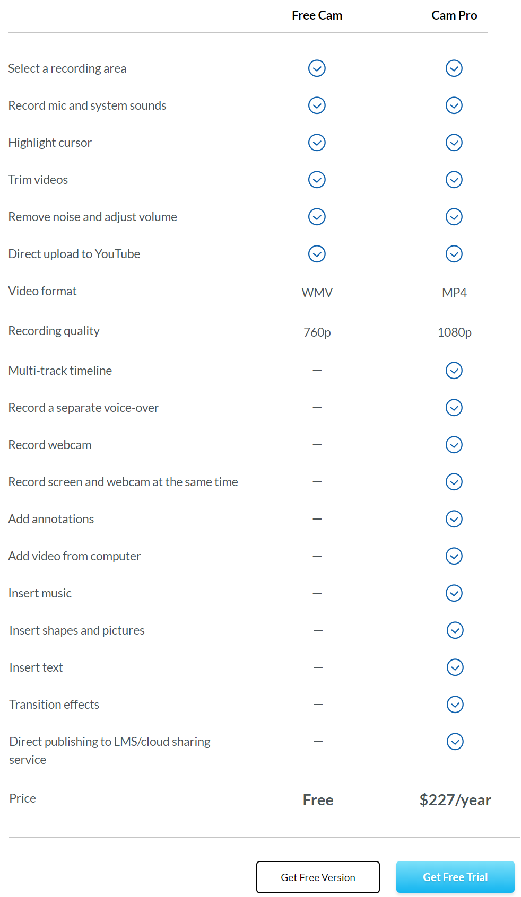무료 - 유료 기능 차이
이외의 프로그램도 이후에 테스트해보고 더좋으면 메인 소개글을 교체, 아니면 여기 리스트에 추가할 예정
내가 필요로 한 + ScreenToGif에서 만족하는 기능 리스트 확인
-
캡처 영역 설정 기능
-
마우스 커서 강조, 클릭 표시 기능 → 마우스 따라다니기 기능
-
녹화 시작 중지 단축키
-
무료이면서 광고 워터마크 분량제한이 없을것
-
결과물에 대한 자유로운 사용 가능
-
등등
여러 이유가 있겠지만 현재로써는 가장 나은 프로그램이라고 판단
나중에 더 좋은 툴을 알게된다면 업데이트 예정
2. 빠른 시작
2.2. 설정
2.2.1. 프로그램 설정
https://www.screentogif.com/features
홈페이지에 모든 설정 항목들이 설명되어 있지는 않은것으로 보임
-
프로그램 설정창 들어가기
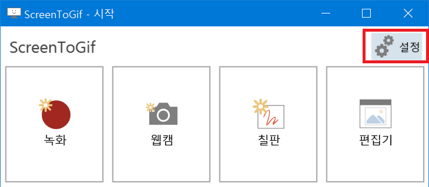-
사용 추천 설정
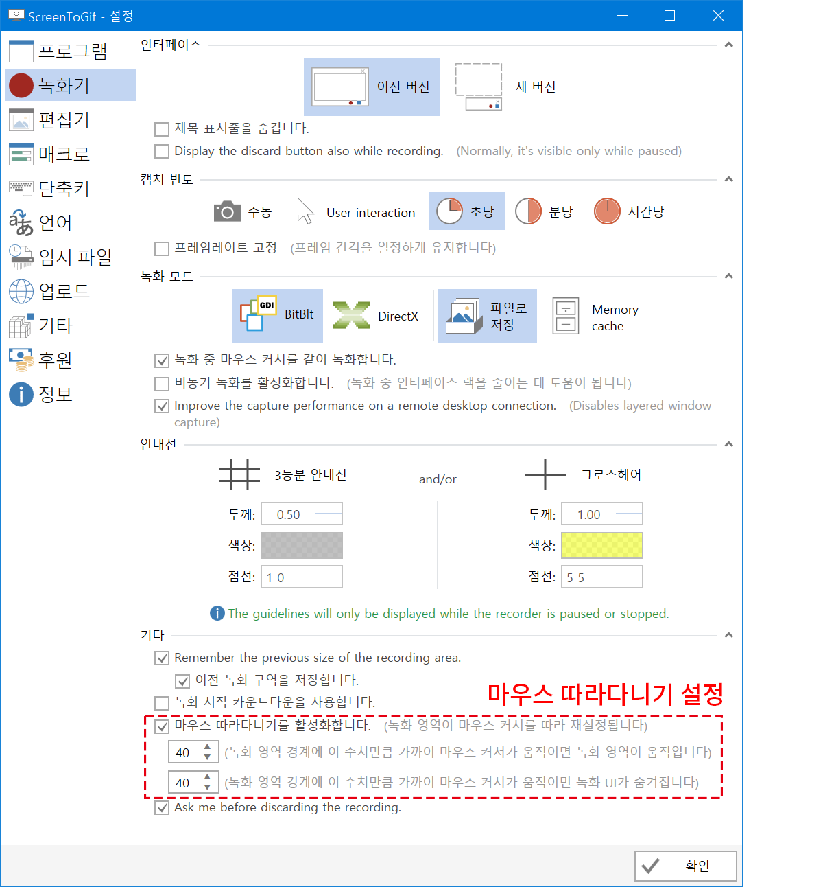-
기본 설정값에서 변경한 부분: '마우스 따라다니기 기능' 활성화 + 녹화 경계 관련 수치 '40' 설정
-
-
-
확인 을 누르면 아래와 같이 알림창 팝업
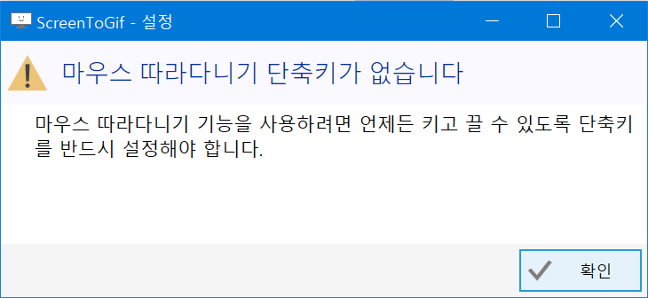다시 한번 아래의 확인 을 누르면 단축키 설정창이 팝업된다.
-
F6 설정
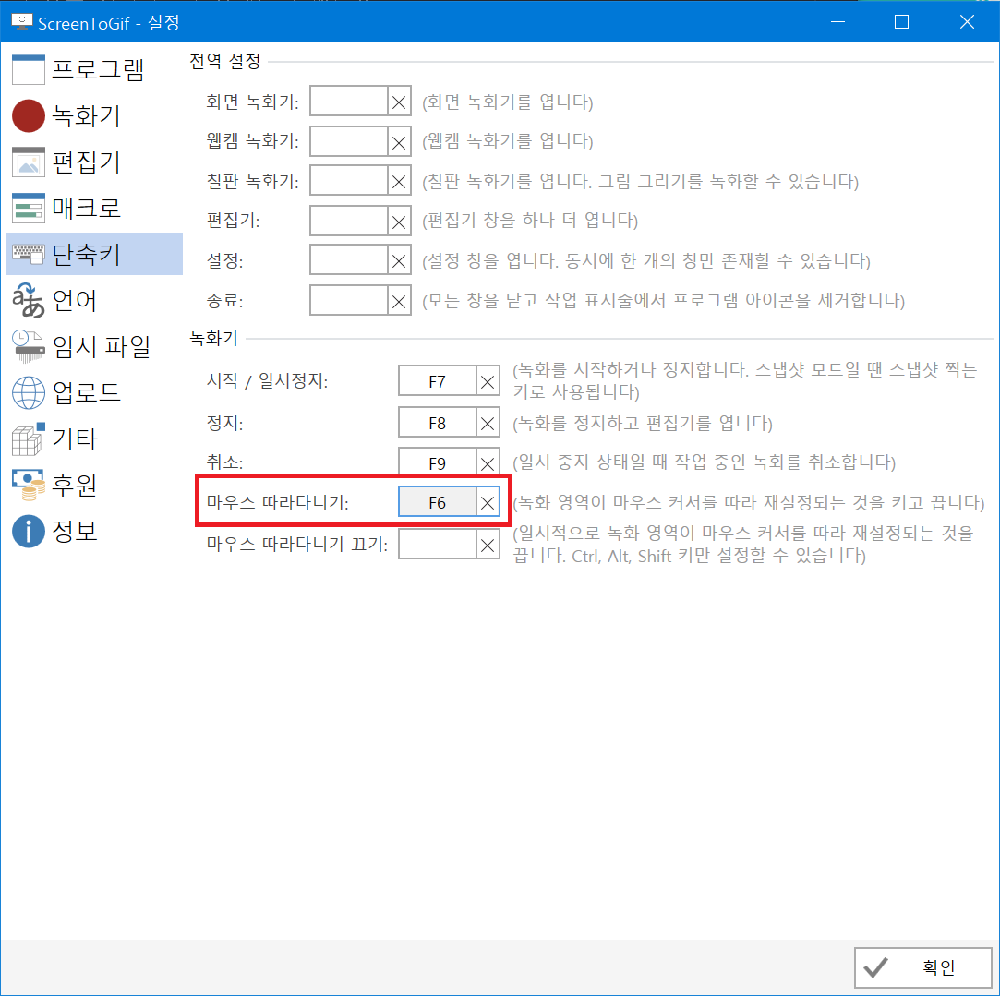
2.2.2. 녹화 설정
-
녹화 모드 들어가기
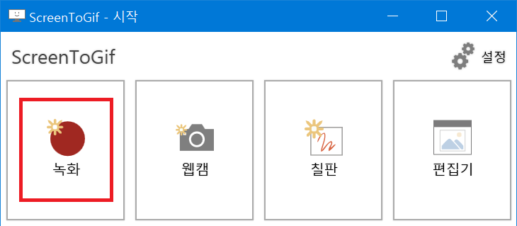-
사용 추천 설정
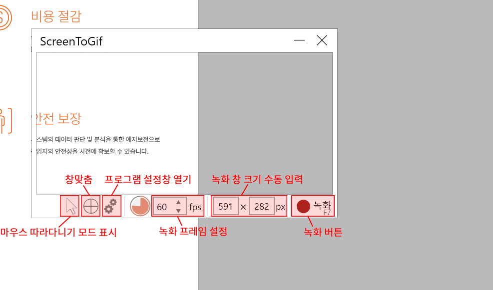-
마우스 따라다니기 모드 표시: 마우스 따라다니기 모드 켯을때 아이콘 표시
-
창맞춤: 해당 아이콘을 드래그하여 창맞춤 기능 활성화
-
프로그램 설정창 열기: 2.2.1, “프로그램 설정” 의 설정창 열기
-
녹화 프레임 설정: 1-60 까지 최대 초당 프레임 수 설정, 뒤에서 이야기하겠지만 60프레임으로 해도 자체 인코딩 성능이 꽤 훌륭하여 용량은 생각보다 그리 크지 않음.
-
녹화 창 크기 수동 입력: 녹화 모드 창의 크기를 직접 픽셀 단위로 입력 가능
-
녹화 버튼: 녹화 시작 버튼 (기본 단축키: F7, 종료 단축키: F8 )
-
-
2.3. 녹화 편집
녹화를 종료하면 (기본 단축키: F8) 자동으로 아래와 같이 결과 파일 편집기 창이 팝업
-
편집기
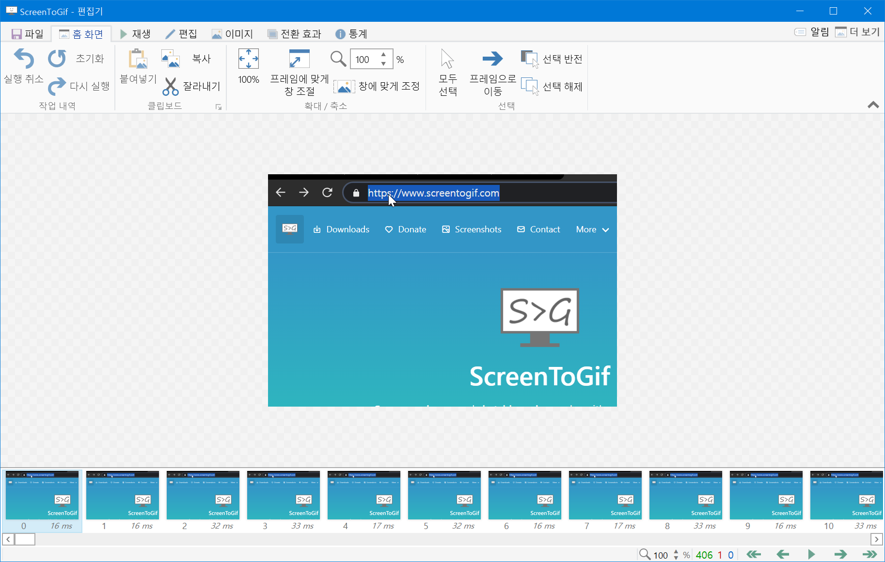-
결과 편집
화면 하단에서 원하는 프레임을 선택하여 잘라내거나 전환 효과 (페이드 아웃, 넘기기) 를 적용하는 정도 편집이 가능
-
인코딩 및 저장
를 누르면 파일로 저장하기 위한 인코딩 옵션 메뉴가 화면 좌측에 열림
파일 종류, 인코더, GIF 설정, 파일 경로, 파일명 등 설정 가능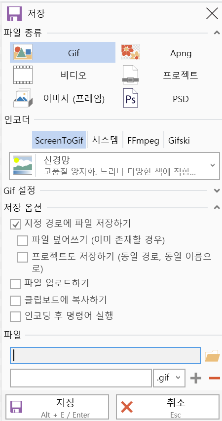하단 파일 탭에 저장 경로를 설정한 뒤 저장 버튼 또는 단축키 ALT+E / ENTER 를 입력하면 인코딩이 시작된다.
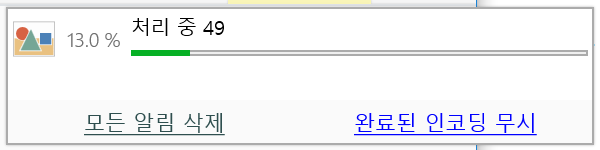
-
2.4. 사용

해상도: 720P, 시간: 20초 기준 약 6 MB 정도 용량